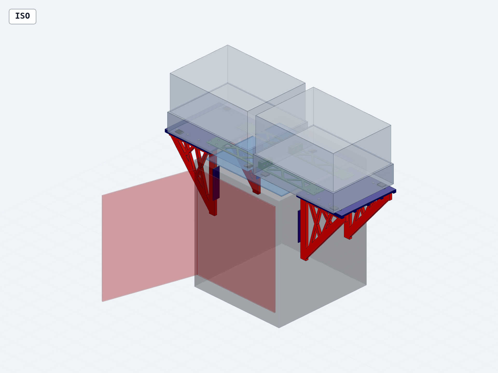
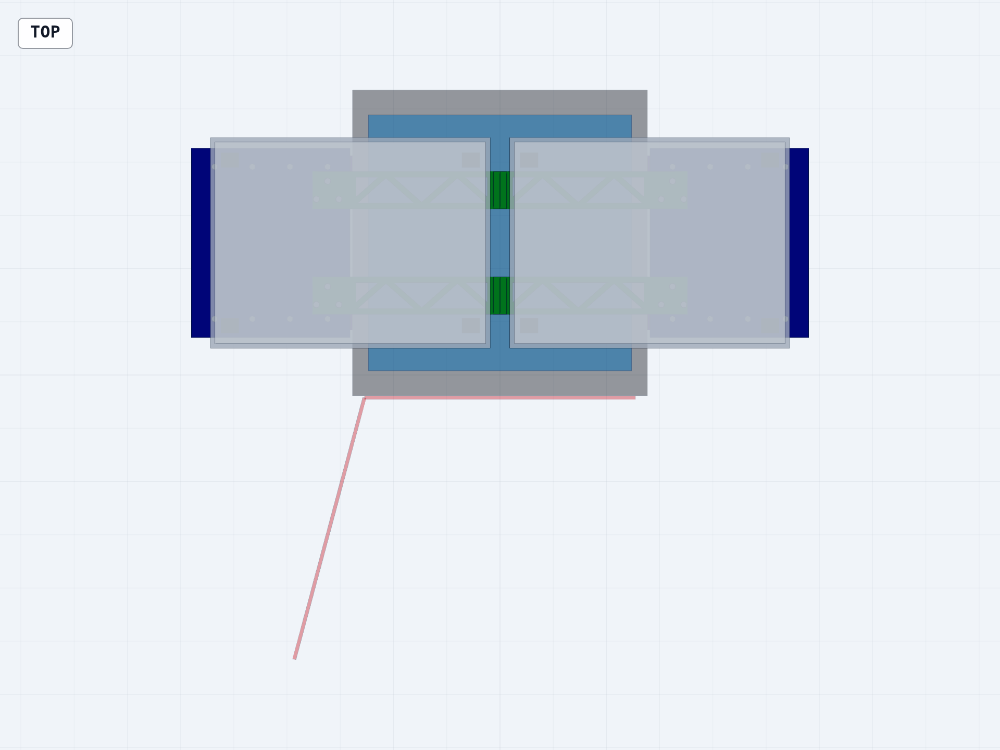
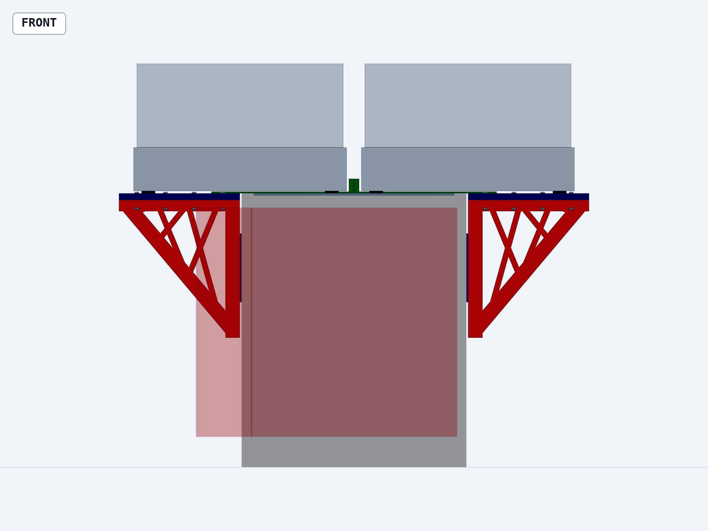

Assembly & Fit-Check Guide · Revision A2
Bambu X2D
Dual AMS 2 Pro Mount
Fully printed ASA structure · 14 printable objects · centered 25.4 mm AMS gap

FIT-REVIEW PROTOTYPE — VERIFY PHYSICAL INTERFACES BEFORE LOADING OR INSTALLATION
Prepared from the validated parametric STEP assembly. Units: millimeters. Global front is the X2D front-door side; left and right are viewed while facing the printer.
This is not a production-certified or load-rated mount. The X2D top rim, glass bearing surface, side contact zones, door envelope, AMS feet, and AMS underside clearances still use provisional geometry. Do not place loaded AMS units on the mount until those interfaces are measured and the structure is proof-tested away from the printer.
| Direction | Meaning in this guide |
|---|
| Front | The side with the X2D front door. In model coordinates this is negative Y. |
| Left / right | Viewed while standing in front of and facing the printer. |
| Shelf root | The inboard shelf edge beside the printer. The shelf extends outward from this edge. |
| Top datum | Z=0: shelf support surface, provisional X2D top surface, and AMS foot bottoms. |
Required physical checks
- Measure the real AMS foot centers, foot size, foot height, and underside clearance.
- Confirm the X2D rim/glass load path and whether any printed tie may contact the glass.
- Confirm all four side-pad bearing zones avoid seams, vents, doors, and removable panels.
- Cycle the front door through its full physical swing with the unloaded mount dry-fitted.
- Determine M4 screw lengths from printed coupons and actual hardware; lengths are not finalized in the CAD.
No aluminum or metal structural beams are used. M4 screws and standard hex nuts remain purchased assembly hardware. Add a separate retention tether for each AMS before operational use.
| Qty. | Printed ASA object | Saved print bounds |
|---|
| 2 | Left and right shelves | 211.1 × 252 × 12 |
| 4 | Left/right, front/rear triangular brackets | 211.1 × 246 × 12 |
| 4 | Front/rear low-profile tie halves | 249 × 50 × 25.4 |
| 4 | Side contact pads | 120 × 30 × 3 |
Modeled M4 hardware
| Qty. | Use | Installation |
|---|
| 16 | Bracket-to-shelf screws + 16 nuts | Four vertical fasteners per bracket; heads at shelf top, nuts in bracket top-chord pockets. |
| 12 | Tie-to-shelf screws + 12 nuts | Three vertical fasteners per 50 mm overlap; recessed heads at tie top, nuts in shelf underside pockets. |
| 6 | Center-boss screws + 6 nuts | Three transverse fasteners per front/rear joint; heads on left, nuts in right-half pockets. |
| 34 | Total M4 screws + 34 standard hex nuts | Screw lengths must be selected after coupon and physical fit checks. |
Preparation
- Print brackets on their broad truss faces, ties and shelves flat, and pads on their largest faces—the individual STEP files are already saved this way.
- Deburr holes and pocket entrances without enlarging load-bearing walls.
- Test one M4 nut trap, one tie button-head recess, one tie overlap, and one center-boss joint before full-size printing.
- Keep left/right and front/rear brackets labeled; their side-entry nut-pocket orientations differ.
- Keep tie halves labeled: left halves carry center screw-head recesses; right halves carry center nut pockets.
Assembly order: build the left and right shelf/bracket modules on a protected bench, dry-fit the four pads and modules to verified printer contact zones, then install the front and rear ties while the AMS units are removed.
 |
 |
- Centered pair: AMS bodies face forward, centers are X=±198.7 mm, and the body-to-body gap is 25.4 mm.
- Outer margin: AMS outer faces are X=±384.7 mm; shelf edges are X=±410.1 mm—exactly 25.4 mm beyond each AMS.
- Foot support: inner foot rows land on the verified X2D top; outer foot rows land fully on shelves; every foot bottom remains at the same Z=0 datum.
- Tie clearance: both 3 mm truss spans stay between the measured foot rows and below the real AMS underside; center bosses remain in the middle gap.
- Door/service: cycle the door fully, check screen and rear access, verify top-glass service strategy, and confirm no part blocks vents, purge hardware, PTFE tubes, cables, or AMS lids.
- Fasteners: all 34 screws are engaged with nuts; the 16 bracket screw heads sit proud on the shelves, while tie screw heads remain seated in their recesses. No screw may protrude into a keep-out or foot-support zone.
Before operational use: remove the mount and proof-test the printed modules/joins away from the printer with a distributed dead load and sustained warm-load period. Inspect ASA parts for whitening, cracking, permanent set, loose nuts, and layer separation. Add one independent retention tether per AMS.
Top-glass service requires removal or loosening of the low ties after the AMS units are removed. Never attempt to lift the glass through the installed tie pair.
Design status: geometry-validated fit-review prototype. This guide documents the modeled assembly; physical interface verification remains mandatory.